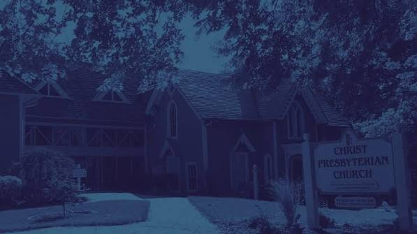
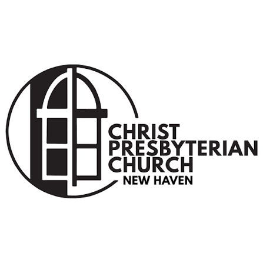
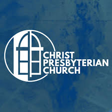
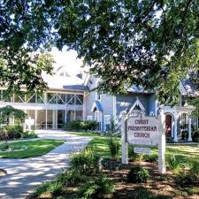
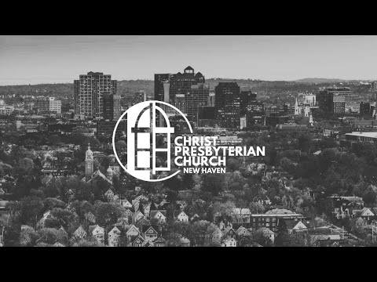
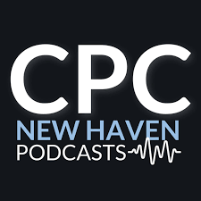

Christ Presbyterian Church
Brand reference
The familiar window mark, a palette drawn from the CPC website, and a Poppins lettering study for signs, screens, and church communications.

01 / Identity
One window, new lettering

The baseline for this comparison.
Presbyterian
ChurchNew Haven
Poppins Bold for the church name and Semibold for New Haven.
The window artwork
The arched window is the shared element in the supplied logo and the archive examples below. This study isolates it from the supplied image for review. Use the original vector artwork for production, especially for large signs.
02 / Colors
The CPC website palette
Use CPC Blue as the primary field, Deep Navy for a darker treatment, and Pale Blue and White for light backgrounds. Set body text in navy on light backgrounds, or white on blue and navy.
#003C6D#002244#E6F0FF#FFFFFFThese are screen values from the church site’s color system, with white as a neutral. Request a material or ink proof before ordering signage.
03 / Applications
Poppins in use
Use Bold (700) for main titles, Semibold (600) for labels and directions, and Regular (400) for supporting copy.
CPC New Haven
Welcome
Sanctuary
Keep directions short and check legibility at the actual viewing distance.
CPC New Haven
Sunday
sermon
Watch or listen to the latest message.
Use the same type hierarchy for sermon cards, announcements, and web graphics.
04 / Reference library
CPC in the wild
Supplied examples of the logo, church photography, signage, and media graphics.










For team review
Where should Poppins go?
Decide whether to adopt Poppins for signs and content only, or also update the lettering in the logo. If the logo lettering changes, confirm the original window artwork and test a full size sign proof before adopting the new version.